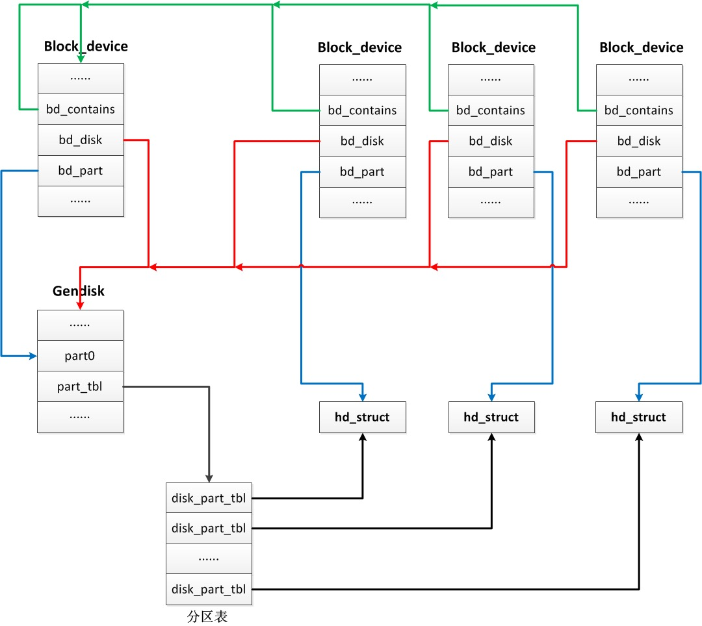

概述
- 本篇总结块设备管理中三个核心数据结构的关系, 加深理解
理解 block_device、gendisk、hd_struct
下面我就类比软件开发的管理模式来说明三者之间的关系，可能不是十分贴切，但希望对你了解三者的关系能提供一些帮助。
block_device 就相当于每个程序猿的档案信息（如姓名、电话、邮件、职位以及 leader 等等），gendisk 相当于一个项目组，而 hd_struct 相当于项目组中的每一个程序猿。如何解释呢？^*^
想象一下，对于人力管理者（相当于 VFS）来说，他其实并不关心底下干活的是哪个程序猿，是高富帅还是矮矬穷，是美女还是帅哥，他只需要知道你的档案信息（block_device）就可以了，因为只要有了你的档案信息，在需要你的时候就随时可以找到你（程序猿就是这么悲催）。
而对于一个项目组（gendisk）来说，里面一个或多个程序猿（hd_struct）。因为项目组至少有一个 leader 吧，而 leader 本质上也是一个程序猿（相当于 struct hd_struct part0）。当一个项目比较庞大时，可能一个 leader 会带领多个兄弟（就像一个硬盘管理着多个分区），然而如果是一个迷你项目，可能只需要项目组 leader 一个人就搞定了（就像一个磁盘不进行分区）。
是不是有那么点意思？^_^
当人力管理需要找某个程序猿（hd_struct 或者 part0）时，只需要找到他的档案信息（block_device）就可以了，因为二者是一对一的关系，而且根据程序猿找到他的项目组（gendisk）是不是也是一件很容易的事情？同理，一旦找到了项目组（gendisk），那么里面的所有程序猿（hd_struct）是不是也非常明朗了？总之一句话，档案信息（block_device）充当了人力管理（相当于 VFS）和项目组成员（gendisk、hd_struct）之间的桥梁。
不知道你有没有看明白，如果还有些混乱直接看下面的图好了：

块设备剖析之关键数据结构分析 - block_device/gendisk/hd_struct
块设备队列结构
在上节中我们提到了 block_device 中的成员变量 struct request_queue *bd_queue 会传递给 gendisk，该请求队列用于接收并处理来自用户发起的 I/O 请求。在每个块设备的驱动程序初始化的时候会生成一个 request_queue。这里会以一个列表的方式存储众多的结构体 request，每一个 request 对应一个请求。这里还有两个重要的函数，一个是 make_request_fn() 函数，用于生成 request；另一个是 request_fn() 函数，用于处理 request。
struct request_queue {
/*
* Together with queue_head for cacheline sharing
*/
struct list_head queue_head;
struct request *last_merge;
struct elevator_queue *elevator;
......
request_fn_proc *request_fn;
make_request_fn *make_request_fn;
......
}
struct request {
struct list_head queuelist;
......
struct request_queue *q;
......
struct bio *bio;
struct bio *biotail;
......
}
- 在
request结构体中最重要的是bio结构体，在bio中bi_next是链表中的下一项，struct bio_vec指向一组页面。
struct bio {
struct bio *bi_next; /* request queue link */
struct block_device *bi_bdev;
blk_status_t bi_status;
......
struct bvec_iter bi_iter;
unsigned short bi_vcnt; /* how many bio_vec's */
unsigned short bi_max_vecs; /* max bvl_vecs we can hold */
atomic_t __bi_cnt; /* pin count */
struct bio_vec *bi_io_vec; /* the actual vec list */
......
};
struct bio_vec {
struct page *bv_page;
unsigned int bv_len;
unsigned int bv_offset;
}
请求队列的初始化
以 scsi 驱动为例。在初始化设备驱动的时候，会调用 scsi_alloc_queue()，把 request_fn() 设置为 scsi_request_fn()。同时还会调用 blk_init_allocated_queue()->blk_queue_make_request()，把 make_request_fn() 设置为 blk_queue_bio()。
/**
* scsi_alloc_sdev - allocate and setup a scsi_Device
* @starget: which target to allocate a &scsi_device for
* @lun: which lun
* @hostdata: usually NULL and set by ->slave_alloc instead
*
* Description:
* Allocate, initialize for io, and return a pointer to a scsi_Device.
* Stores the @shost, @channel, @id, and @lun in the scsi_Device, and
* adds scsi_Device to the appropriate list.
*
* Return value:
* scsi_Device pointer, or NULL on failure.
**/
static struct scsi_device *scsi_alloc_sdev(struct scsi_target *starget,
u64 lun, void *hostdata)
{
struct scsi_device *sdev;
sdev = kzalloc(sizeof(*sdev) + shost->transportt->device_size,
GFP_ATOMIC);
......
sdev->request_queue = scsi_alloc_queue(sdev);
......
}
struct request_queue *scsi_alloc_queue(struct scsi_device *sdev)
{
struct Scsi_Host *shost = sdev->host;
struct request_queue *q;
q = blk_alloc_queue_node(GFP_KERNEL, NUMA_NO_NODE);
if (!q)
return NULL;
q->cmd_size = sizeof(struct scsi_cmnd) + shost->hostt->cmd_size;
q->rq_alloc_data = shost;
q->request_fn = scsi_request_fn;
q->init_rq_fn = scsi_init_rq;
q->exit_rq_fn = scsi_exit_rq;
q->initialize_rq_fn = scsi_initialize_rq;
//调用blk_queue_make_request(q, blk_queue_bio);
if (blk_init_allocated_queue(q) < 0) {
blk_cleanup_queue(q);
return NULL;
}
__scsi_init_queue(shost, q);
......
return q
}
在 blk_init_allocated_queue() 中，除了初始化 make_request_fn() 函数，还要做一件很重要的事情，就是初始化 I/O 的电梯算法。
int blk_init_allocated_queue(struct request_queue *q)
{
q->fq = blk_alloc_flush_queue(q, NUMA_NO_NODE, q->cmd_size);
......
blk_queue_make_request(q, blk_queue_bio);
......
/* init elevator */
if (elevator_init(q, NULL)) {
......
}
......
}
电梯算法类型对应的结构体struct elevator_type为主要有以下几类：
- elevator_noop：Noop 调度算法是最简单的 IO 调度算法，它将 IO 请求放入到一个 FIFO 队列中，然后逐个执行这些 IO 请求。
- iosched_deadline：Deadline 算法要保证每个 IO 请求在一定的时间内一定要被服务到，以此来避免某个请求饥饿。为了完成这个目标，算法中引入了两类队列，一类队列通过红黑树对请求按起始扇区序号进行排序，称为 sort_list，按照此队列传输性能会比较高；另一类队列对请求按它们的生成时间进行排序，由链表来组织，称为 fifo_list，并且每一个请求都有一个期限值。
- iosched_cfq：熟悉的 CFQ 完全公平调度算法。所有的请求会在多个队列中排序。同一个进程的请求，总是在同一队列中处理。时间片会分配到每个队列，通过轮询算法，我们保证了 I/O 带宽，以公平的方式，在不同队列之间进行共享。
elevator_init() 中会根据名称来指定电梯算法，如果没有选择，那就默认使用 iosched_cfq